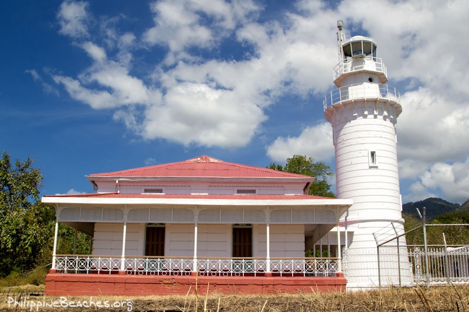
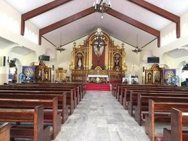
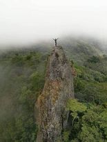
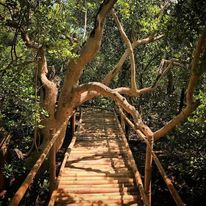

WELCOME TO LOBO BATANGAS
SCENERY
MALIBRIGO LIGHTHOUSE.

- At the time, Malabrigo Point was considered a dangerous area among seafarers because of its rocky coastline and strong currents especially during the monsoon season, hence, its name which comes from the Spanish words mal abrigo, meaning "bad shelter." In 1891, Spanish engineer Guillermo Brockman, who also designed the lighthouses at Capul Island and San Bernardino Island, created a design for a lighthouse in Punta Malabrigo which consisted of a Victorian architecture-inspired cylindrical brick tower with a metal staircase and double balcony, lighthouse keeper's quarters, and machine room. The company of Chinese contractor Jose Garcia constructed the lighthouse out of brick and lime cement and completed it in 1896, with the lighthouse being lit for the first time on October 1, 1896.
- After the American annexation of the Philippines in 1898, the management of the Spanish-built lighthouses in the country fell into American hands. From 1900 to 1902 — the height of the Philippine–American War — the American gunboat USS Villalobos, a former Spanish gunboat captured after the American annexation of the Philippines, guarded the lighthouse. The gunboat regularly patrolled the area around the lighthouses at Cape Santiago, Malabrigo Point and Cabra Island from its base in Cavite, maintaining a communication link with the Marines guarding lighthouses and keeping a sharp lookout for smuggling and trafficking of supplies to Filipino revolutionaries.
|
ST. MICHEAL THE ARCHANGEL PARISH CHURCH.

- St. Michael the archangel parish church The town of Lobo is located on the southern tip of Batangas, facing the Verde Island Passage — a strait that separates the island of Luzon and Mindoro. From the Malabrigo Point Lighthouse viewpoint, you can see nearby Verde Island and vessels passing through the busy strait. It shares borders with San Juan on the east and Batangas City on the west. It is hailed as the “Atis Capital of the Philippines” (Resolution 2011-61, September 2011). The shore of Lobo is uniquely carpeted by smooth pebbles. The town also has mangrove forests and fish sanctuaries.
The St. Michael the Archangel Parish Church is located in Poblacion, Lobo. According to the Oblates of St. Joseph’s account, the parish was established in November 1872 and the original church was first built in 1886. It was reconstructed in the 1970s, replacing the old structure with a concrete one. But this one was destroyed by typhoon Yeyeng and was reconstructed again from 1980-1986.
|
MT. NALAYAG MONOLITH.

- Mt. Nalayag Monolith is a fascinating mountain located in Barangay Balibago, Lobo, Batangas. It offers stunning coastal views of Batangas province and nearby mountains. Mt. Nalayag Monolith has a height of 552 meters above sea level or 1811 feet. It has opened to the public in the year 2017.
Nalayag Monolith originated from the Tagalog word Layag which means “to set sail”. It was said that the mountain was named as such due to its appearance which looks like a boat. On the other hand, its nearby mountain Mt. Masalukot came from the local dialect “salakot” which means a kind of hat.
Nalayag Monolith has a difficulty of 4/9 and has a trail class of 1 to 3. It requires hikers three to four hours of climbing to reach the summit. Its trail is composed of grassland and woodland which makes Nalayag Monolith among the favorable hiking destination in Batangas. Moreover, its unique rock formation and challenging trail attract many local visitors to visit the municipality of Lobo, Batangas, and have a dayhike.
|
OLO OLO MANGROVE FOREST AND ECHO PARK.

- The entrance to the Olo-olo Mangrove Forest and Ecopark in Barangay Olo-olo, Lobo, Batangas.
BY this time of the year, a hundred trees in this coastal community would have been cut down, repainted, decorated and sold as Christmas trees to give joy to homes in downtown Lobo, a small town in Batangas province.
The mangrove tree species, locally called palapat, is popular among children in this coastal barangay called Olo-olo because they make beautiful Christmas trees, the demand for which rises during the so-called “ber” months leading up to Christmas.
|